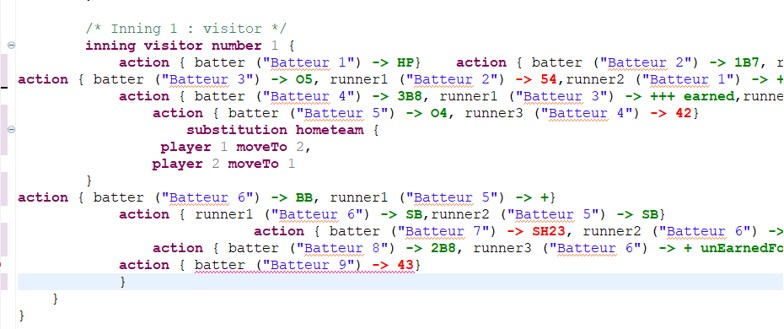
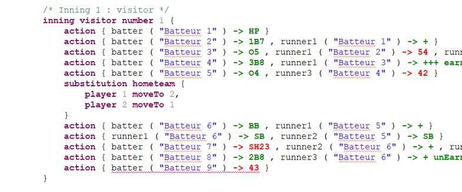

L’indentation consiste à décaler le texte vers la droite selon son niveau d’imbrication. Elle rend la saisie plus lisible : on repère immédiatement la structure du document, c’est-à-dire ce qui appartient à quoi (une manche, une équipe, une action, etc.). Un texte bien indenté est plus facile à relire, à vérifier et à corriger, et une erreur ou un oubli s’y voit beaucoup plus vite.
Pendant la saisie, il est normal que le texte se désorganise, par exemple après un copier-coller ou plusieurs corrections. L’indentation n’a aucune incidence sur le scorage : elle améliore uniquement la présentation.
Il n’est pas nécessaire de corriger les décalages à la main : l’éditeur peut reformater automatiquement le texte.
Pour mettre en forme tout le document, cliquer dans l’éditeur sans rien sélectionner.
Pour mettre en forme une partie seulement, sélectionner d’abord les lignes concernées.
Utiliser le raccourci Ctrl+Maj+F, ou faire un clic droit dans l’éditeur et choisir la commande de mise en forme (Format).
Dans l’exemple ci-dessous, le texte est mal indenté ce qui complique la relecture des actions qui sont survenues dans la manche.

En sélectionnant cette partie du code et en utilisant Ctrl+Shift+F Le texte est alors réindenté de façon homogène, comme dans l’image ci-dessous.
